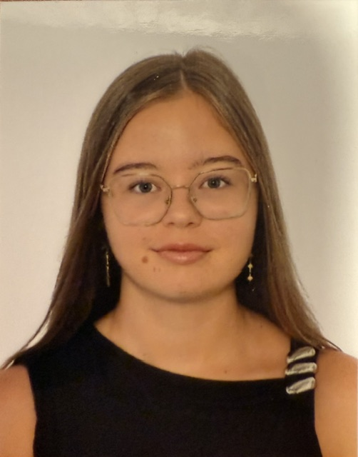

Proyecto 1
Bla bla .
Java
Concurrencia
Ver en GitHub →
Estudiante de Matemáticas e Ingeniería Informática. Especializado en el desarrollo de software eficiente y análisis de datos.
Ver Currículum
Bla bla .
bla bla
Bla bla